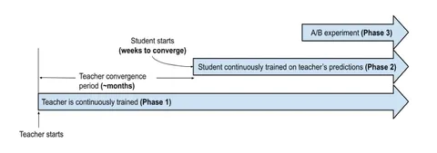

часть 1
Сегодняшнюю статью подготовила для RecSys 2024 команда Google. В ней они рассказали, как используют дистилляцию для ранжирования видео на главной YouTube: не шортсов, а именно роликов на главной странице.
Говоря о дистилляции в CV или NLP, обычно подразумевают классический пайплайн:
🔹 обучение большой модели на некотором объёме данных;
🔹 подготовка датасета из предсказаний большой модели;
🔹 обучение маленьких моделей с использованием предсказаний большой нейросети.
Применять такой подход напрямую для рекомендаций не получится: поведение пользователей, набор рекомендуемых айтемов меняются со временем, иногда даже в течение дня. Это значит, что один раз обучить большую модель на длинном промежутке времени и использовать её как учителя не получится, она быстро устареет. Для точных рекомендаций YouTube учитывает в дистилляции distribution shift: постоянно дообучает модели нейросетевого ранжирования на свежих данных.
Как это устроено — показано на первой схеме. Большая модель-учитель непрерывно обучается на данных за период порядка месяцев. Каждая порция таких предсказаний записывается в таблицу, и маленькие модели-ученики используют их в процессе дообучения.
Для большей эффективности используется только одна большая модель-учитель, заточенная на несколько задач сразу. Маленькие же модели готовятся для более узких целей, каждая для своей. Такой подход, ко всему прочему, позволяет быстрее и дешевле запускать эксперименты, поскольку для обучения учеников требуются недели, а не месяцы.
@RecSysChannel
Разбор подготовил
